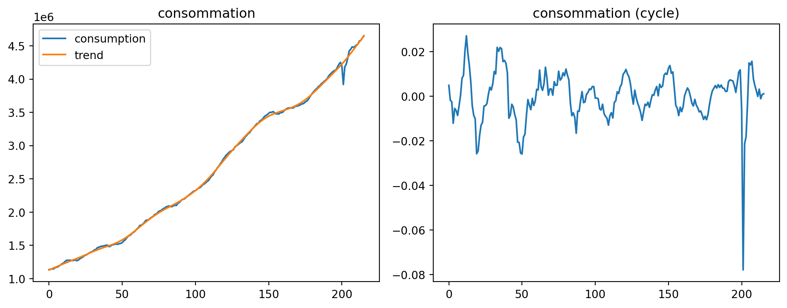

Code
from dyno import dynareCycles et fluctuations - AE2E6
Téléchargez le fichier mod rbc.
from dyno import dynareOuvrez le modèle RBC et résolvez-le. Corrigez les erreurs du fichier mod s’il y en a.
dynare("rbc_fixed.mod")| equations | 8 | |
| variables | 9 | |
| endogenous | 8 | c, r, w, n, k, i, y, a |
| exogenous | 1 | epsilon |
| constants | 7 | alpha, beta, delta, eta, khi, nss, rho |
eq 1
0
|
eq 2
0
|
eq 3
8.88178e-16
|
eq 4
0
|
eq 5
0
|
eq 6
0
|
eq 7
-6.93889e-18
|
eq 8
0
|
1
0
|
2
0
|
3
0
|
4
0
|
5
0
|
6
0
|
7
0.941906
|
8
0.95
|
9
1.07784
|
10
inf
|
11
inf
|
12
inf
|
13
inf
|
14
inf
|
15
inf
|
16
inf
|
| c | r | w | n | k | i | y | a |
|---|---|---|---|---|---|---|---|
| 0.739618 | 0.040228 | 1.889055 | 0.33 | 7.63246 | 0.190811 | 0.93043 | 1.0 |
| c[t-1] | r[t-1] | w[t-1] | n[t-1] | k[t-1] | i[t-1] | y[t-1] | a[t-1] | epsilon[t] | |
|---|---|---|---|---|---|---|---|---|---|
| c[t] | 0.0 | 0.0 | 0.0 | 0.0 | 0.052398 | 0.0 | 0.0 | 0.312418 | 0.328861 |
| r[t] | 0.0 | 0.0 | 0.0 | 0.0 | -0.004436 | 0.0 | 0.0 | 0.055505 | 0.058427 |
| w[t] | 0.0 | 0.0 | 0.0 | 0.0 | 0.102600 | 0.0 | 0.0 | 1.394746 | 1.468153 |
| n[t] | 0.0 | 0.0 | 0.0 | 0.0 | -0.011077 | 0.0 | 0.0 | 0.211670 | 0.222810 |
| k[t] | 0.0 | 0.0 | 0.0 | 0.0 | 0.941906 | 0.0 | 0.0 | 0.971346 | 1.022470 |
| i[t] | 0.0 | 0.0 | 0.0 | 0.0 | -0.033094 | 0.0 | 0.0 | 0.971346 | 1.022470 |
| y[t] | 0.0 | 0.0 | 0.0 | 0.0 | 0.019304 | 0.0 | 0.0 | 1.283764 | 1.351331 |
| a[t] | 0.0 | 0.0 | 0.0 | 0.0 | 0.000000 | 0.0 | 0.0 | 0.950000 | 1.000000 |
| Mean | Std. Dev. | Variance | |
|---|---|---|---|
| VARIABLE | |||
| c | 0.7396 | 0.0271 | 0.0007 |
| r | 0.0402 | 0.0013 | 0.0000 |
| w | 1.8891 | 0.0746 | 0.0056 |
| n | 0.3300 | 0.0045 | 0.0000 |
| k | 7.6325 | 0.3724 | 0.1387 |
| i | 0.1908 | 0.0224 | 0.0005 |
| y | 0.9304 | 0.0444 | 0.0020 |
| a | 1.0000 | 0.0288 | 0.0008 |
| c | r | w | n | k | i | y | a | |
|---|---|---|---|---|---|---|---|---|
| c | 0.000735 | -0.000004 | 0.001996 | 0.000042 | 0.009911 | 0.000366 | 0.001101 | 0.000675 |
| r | -0.000004 | 0.000002 | 0.000004 | 0.000005 | -0.000142 | 0.000020 | 0.000016 | 0.000015 |
| w | 0.001996 | 0.000004 | 0.005562 | 0.000165 | 0.026063 | 0.001208 | 0.003204 | 0.002007 |
| n | 0.000042 | 0.000005 | 0.000165 | 0.000020 | 0.000266 | 0.000097 | 0.000139 | 0.000100 |
| k | 0.009911 | -0.000142 | 0.026063 | 0.000266 | 0.138681 | 0.003674 | 0.013585 | 0.008075 |
| i | 0.000366 | 0.000020 | 0.001208 | 0.000097 | 0.003674 | 0.000501 | 0.000868 | 0.000596 |
| y | 0.001101 | 0.000016 | 0.003204 | 0.000139 | 0.013585 | 0.000868 | 0.001969 | 0.001271 |
| a | 0.000675 | 0.000015 | 0.002007 | 0.000100 | 0.008075 | 0.000596 | 0.001271 | 0.000831 |
| c | r | w | n | k | i | y | a | |
|---|---|---|---|---|---|---|---|---|
| c | 0.000009 | 1.556356e-06 | 0.000039 | 0.000006 | 0.000027 | 0.000027 | 0.000036 | 0.000027 |
| r | 0.000002 | 2.765077e-07 | 0.000007 | 0.000001 | 0.000005 | 0.000005 | 0.000006 | 0.000005 |
| w | 0.000039 | 6.948125e-06 | 0.000175 | 0.000026 | 0.000122 | 0.000122 | 0.000161 | 0.000119 |
| n | 0.000006 | 1.054464e-06 | 0.000026 | 0.000004 | 0.000018 | 0.000018 | 0.000024 | 0.000018 |
| k | 0.000027 | 4.838899e-06 | 0.000122 | 0.000018 | 0.000085 | 0.000085 | 0.000112 | 0.000083 |
| i | 0.000027 | 4.838899e-06 | 0.000122 | 0.000018 | 0.000085 | 0.000085 | 0.000112 | 0.000083 |
| y | 0.000036 | 6.395255e-06 | 0.000161 | 0.000024 | 0.000112 | 0.000112 | 0.000148 | 0.000109 |
| a | 0.000027 | 4.732560e-06 | 0.000119 | 0.000018 | 0.000083 | 0.000083 | 0.000109 | 0.000081 |
(si besoin, téléchargez le modèle corrigé ici )
Inspectez les différents éléments de la solution (règle de décision, moments inconditionnels, simulations).
Ces éléments sont présents dans le rapport de la question précédente. On peut aussi y accéder en inspectant l’objet renvoyé par la fonction dynare.
report = dynare("rbc_fixed.mod")
# report. # inspectez l'objet report pour trouver les différents éléments de la solution# TODOInterprétez l’effet d’un choc de productivité. Comment dépend-il de la persistance du choc ?
# TODOTéléchargez les séries temporelles des États-Unis depuis la Banque mondiale pour : PIB réel, investissement, consommation, heures travaillées.
Utilisons le code suivant pour télécharger les données et les préparer pour l’analyse. Nous allons utiliser la bibliothèque dbnomics pour importer les données de l’OCDE (pour ça il suffit de trouver les identifiants des séries sur le site de DBNomics).
import matplotlib.pyplot as plt
import numpy as np
import pandas as pd
from dbnomics import fetch_series
from statsmodels.tsa.filters.hp_filter import hpfilterseries_ids = [
"OECD/QNA/USA.P5.LNBQRSA.Q", # investissement
"OECD/QNA/USA.B1_GS1.LNBQRSA.Q", # PIB
"OECD/QNA/USA.P3.LNBQRSA.Q", # consommation
]
frames = []
for sid in series_ids:
tmp = fetch_series(sid)[["period", "value"]].copy()
tmp["Subject"] = sid.split("/")[2].split(".")[1]
frames.append(tmp)
df_long = pd.concat(frames, ignore_index=True)# Ne garder que les données pertinentes, au format long.
df_long = df_long[["Subject", "period", "value"]]df = df_long.pivot(index="period", columns="Subject", values="value").reset_index()df = df.sort_values("period").dropna().reset_index(drop=True)df = df.rename(
columns={
"period": "period",
"P5": "investment",
"B1_GS1": "gdp",
"P3": "consumption",
}
)On peut maintenant tracer les séries temporelles:
# TODODétrendez toutes les séries.
# Détrender la série de consommation.
series = df["consumption"]
_, trend = hpfilter(series, lamb=1600)
cycle = (series - trend) / trend
df["consumption_trend"] = trend
df["consumption_cycle"] = cyclefig, axes = plt.subplots(1, 2, figsize=(10, 4))
axes[0].plot(series.values, label="consumption")
axes[0].plot(trend.values, label="trend")
axes[0].set_title("consommation")
axes[0].legend()
axes[1].plot(cycle.values)
axes[1].set_title("consommation (cycle)")
plt.tight_layout()
plt.show()
# Détrender le PIB.# Détrender la série d'investissement.Calculez les corrélations entre les séries détrendées. Calculez les ratios \(\frac{\sigma(investment)}{\sigma(gdp)}\) et \(\frac{\sigma (consumption)}{\sigma (gdp)}\). Comparez avec le modèle RBC et commentez.
# TODOOn peux calculer l’équivalent des ces ratios dans le modèle, en calculant les volatilités conditionnelles (en log)
dr = report.solution.decision_rule
Σ0 = dr.Y @ dr.Σ @ dr.Y.T # volatilité conditionelle
x = dr.x0 # steady-state
std_model = np.diag(Σ0) / x # volatilités conditionnelles en en log
variable_names = dr.symbols['endogenous']# TODO